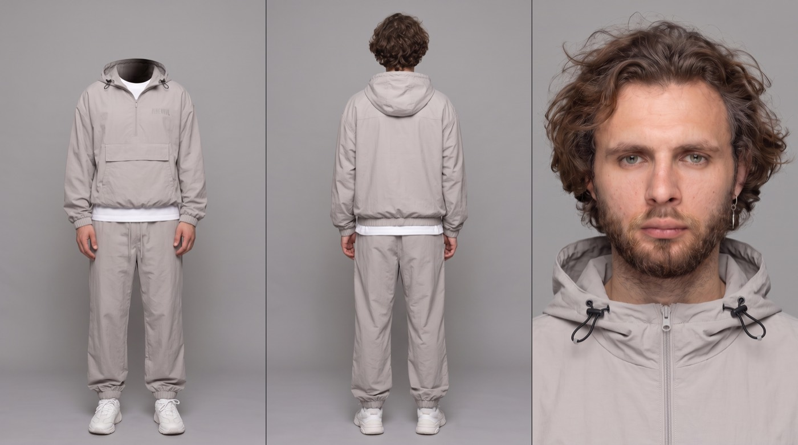
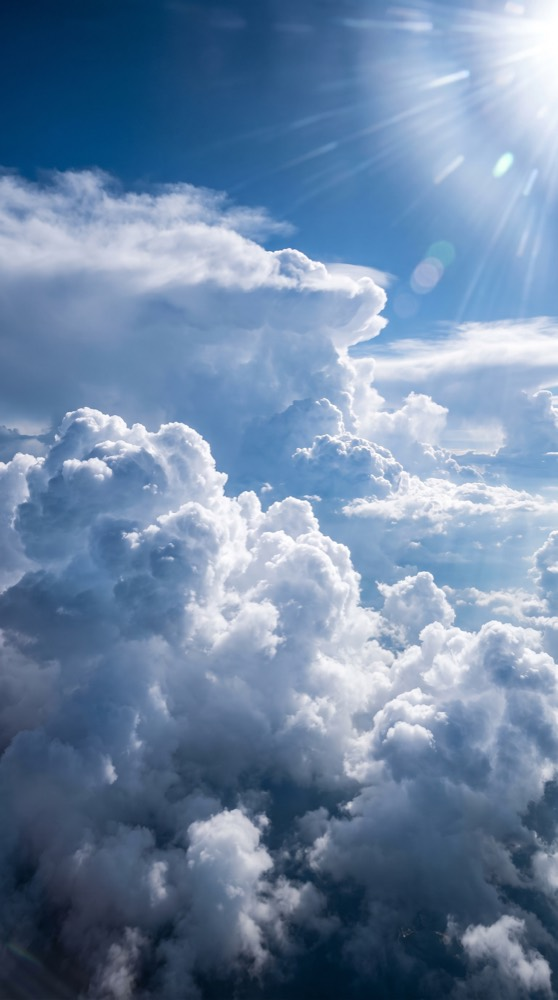

Свободное падение
над облаками
Два кинематографичных шота, которые клеятся в один рилс: падение снизу и срыв с края облака. Внутри — не только видеопромпты, но и то, с чего всё начинается: как собрать карту героя и локацию, чтобы лицо не плыло от кадра к кадру.
- Сначала два референса. Карта героя и картинка с облаками — их делаешь в любом image-генераторе по промптам ниже.
- Потом видео. Обе карты загружаешь в Seedance 2.5 и вставляешь промпт шота.


- Лицо. Главный риск — дрейф между шотами. Если поплыло, усиль формулировку «100% matches the reference» и перегенерируй, правкой не чинится.
- Ткань. Смысл первого шота — контраст: тело расслаблено, а нейлон рвётся вверх и хлещет. Если куртка висит спокойно — кадр мёртвый, перегенерируй.
- Направление падения. Во втором шоте с 7-й секунды герой падает спиной вниз, лицом к небу. Перевернулся животом — брак.
- Один человек в кадре. На широких планах модель любит дорисовать вторую фигуру. Проверяй каждый план отдельно.
Карта героя
Первое, что нужно сделать, — «паспорт» персонажа: три панели на сером фоне, по которым модель запоминает лицо, причёску и одежду. Без него герой поплывёт между кадрами. Загрузи своё фото как @image1 — лицо возьмётся с него, а одежду опишет промпт.
Three-panel character reference sheet on a flat neutral grey seamless studio backdrop, shadowless even light, no cast shadow on the floor. Panel 1 (left): full-body front view of the outfit, standing straight, arms relaxed at the sides — the head is omitted entirely, only the garments and the empty hood opening are visible. Panel 2 (centre): the same person seen from directly behind, full body, standing straight, arms relaxed, hood down on the back. Panel 3 (right): chest-up close-up of the face, looking straight into the camera, neutral expression, hood collar visible at the bottom of frame. FACE AND HAIR: exactly matches @image1 — same face, same hair, same beard, same eye colour. Do not restyle, do not idealise, do not change age. WARDROBE (identical in all three panels): oversized light grey nylon half-zip anorak with a hood, black drawstring toggles at the collar and a large kangaroo pocket on the chest, worn over a white t-shirt with the hem showing below the jacket; matching light grey nylon track pants with elastic cuffs; white chunky sneakers. STYLE: photoreal studio product photography, sharp fabric texture — visible nylon weave, crinkle and stitching, natural skin texture with pores, strand-by-strand hair. Neutral colour, no grade, no vignette, no lens flare. OUTPUT: horizontal 16:9, the three panels separated by thin vertical dividers.
Локация: облака
Вторая карта — сама локация. Она задаёт геометрию облаков, их масштаб и плотность. Время суток в ней не важно: в видеопромптах сцена всё равно пересвечивается под рассвет.
Photoreal aerial photograph taken from above the cloud layer: a vast field of towering white cumulus clouds seen from the height of an airliner, dense billowing cloud towers with deep soft folds and crisp sunlit rims, the highest tower flattening into a wide anvil. SKY: deep saturated blue overhead, fading paler toward the horizon. High sun in the upper right corner, long visible sun rays raking down across the cloud tops. LIGHT: hard directional sunlight from the upper right, brilliant white on the lit faces of the clouds, cool blue-violet in the shadowed valleys between the towers, strong sense of depth and scale. STYLE: photoreal, shot on a full-frame camera through an aircraft window, natural colour, fine grain, no stylisation, no people, no aircraft, no text. OUTPUT: vertical 9:16, high detail.
Падение снизу
Один непрерывный кадр: камера летит под героем и смотрит строго вверх. Тело расслаблено, глаза закрыты — а одежда рвётся вверх и хлещет. Весь эффект держится на контрасте: человек спокоен, ткань в ярости.
SCENE CONTEXT A single continuous vertical shot: a young man in free fall high above a sea of clouds at sunrise, filmed from directly below him as he plummets toward the camera, his clothes violently whipping in the wind. His expression is completely serene — the fall is a choice. ACTIVE REFERENCES @image1 — young man, late twenties, shoulder-length wavy chestnut-brown hair, full short beard and moustache, pale grey-green eyes, small silver earring in one ear. Wearing an oversized light grey nylon half-zip anorak with a hood, drawstring toggles at the collar and a large front kangaroo pocket, over a white t-shirt with the hem showing below the jacket, matching light grey nylon track pants with elastic cuffs, white chunky sneakers. 100% matches the reference. Ignore the grey studio backdrop and the multi-panel layout of the reference — it defines face, hair and wardrobe only. @image2 — location reference: towering cumulus cloudscape. Controls cloud geometry, scale and atmosphere only, not camera angle, framing, or time of day — the scene is re-lit as sunrise. LOCATION MAP Open sky between cloud layers. Far above the falling man: the bright upper sky, deep blue overhead fading to warm gold, with the sunlit rims of huge cumulus towers at the frame edges. The camera is below him in the open air, falling slightly slower than he is. FIRST FRAME AND SPATIAL BLOCKING First frame: medium shot from directly beneath the falling man, camera aimed straight up — @image1 centered in frame from roughly knees to head, body loose and face-down toward camera, arms spread, framed against the vast bright sky and the glowing cloud towers at the edges. His clothes and hair are already blasting upward away from camera. FORMAT MODE Vertical 9:16, single continuous shot, 6 seconds. OPTICS Medium shot on a moderate wide lens, close enough that fabric detail and his calm face read clearly, wide enough that the sky and cloud rims frame him. CAMERA Handheld shaky camera for the entire shot: constant rough jitter, unstable framing, small violent bumps and drift corrections as if the operator is free-falling with him — he slowly gains on the camera, growing slightly larger in frame through the shot. The frame slowly rolls a few degrees. The shake never settles. ACTION TIMING 0–6s: Continuous free fall. His body stays loose and relaxed, arms spread, fingers open, small weightless drifts of his limbs. His eyes are closed, face serene, a faint trace of a smile in the beard. The dominant motion is the fabric: the oversized grey nylon anorak balloons, snaps and flaps violently upward, the hood inflating and collapsing behind his shoulders, the drawstring toggles whipping loose; the white t-shirt hem thrashes out from under the jacket; the baggy nylon track pants ripple in fast chaotic waves around his legs, elastic cuffs shuddering; his wavy chestnut hair streams straight up and whips across the top of frame. Wisps of thin cloud vapor rush past between him and the camera. PHYSICS True terminal-velocity wind behavior: nylon flutters at high frequency with hard snapping oscillations, sleeves and hem inflate and collapse rapidly, hair whips with heavy inertia. His limbs drift with slow weightless momentum while the cloth moves violently — the contrast between calm body and thrashing fabric is the core of the shot. Passing vapor streaks reinforce his downward speed. LIGHTING Low golden sunrise from the side: warm amber light rakes across his body and catches every fold and ripple of the flapping nylon, rim-lighting his hair and beard against the deep blue upper sky. Cloud towers at the frame edges glow peach and rose. AUDIO Deep roaring rush of free-fall wind, hard nylon snapping and fluttering close to the mic, strands of wind whistle. No music, no dialogue, no breathing audible over the wind. STYLE Photorealistic live-action cinema, muted desaturated film grade with warm golden-hour tones — peach, amber, soft violet-blue shadows — fine analog grain, gentle contrast. QUALITY Sharp readable face and body poses with natural cinematic motion blur on the fast-moving fabric and hair; stable temporal cadence, no ghosting, no duplicated limbs, no frame-skipping stutter. POSITIVE CONSTRAINTS Exactly one person appears: @image1, wardrobe identical to the reference. His face stays calm with eyes closed for the entire shot. The camera stays below him, aimed up, shaking continuously from first frame to last. The fabric motion stays violent throughout — it never settles. STRONG anamorphic lens character: horizontal squeeze and compression, oval elliptical bokeh, horizontally stretched highlights, curved barrel edge distortion, chromatic aberration toward the edges. NO lens flares, NO light streaks, NO floating bokeh circles.
Край облака
Мини-фильм из пяти планов: герой теряет равновесие на краю, ловит себя, садится — и спокойно откидывается спиной в пустоту. Сначала опасность, потом осознанный выбор. Из него же нарезается вторая половина рилса.
SCENE CONTEXT A dreamlike vertical cinematic sequence at sunrise: a young man stands dangerously off-balance on the edge of a massive cumulus cloud, fights to steady himself, carefully sits on the rim with his back to the drop — then calmly lets himself tip backward into the open sky, falling back-first with his face toward the sun. Danger first, serene surrender after. ACTIVE REFERENCES @image1 — young man, late twenties, shoulder-length wavy chestnut-brown hair, full short beard and moustache, pale grey-green eyes, small silver earring in one ear. Wearing an oversized light grey nylon half-zip anorak with a hood, drawstring toggles at the collar and a large front kangaroo pocket, over a white t-shirt with the hem showing below the jacket, matching light grey nylon track pants with elastic cuffs, white chunky sneakers. 100% matches the reference. Ignore the grey studio backdrop and the multi-panel layout of the reference — it defines face, hair and wardrobe only. @image2 — location reference: towering cumulus cloudscape seen from above the cloud layer. Controls cloud geometry, scale and atmosphere only, not camera angle, framing, or time of day — the scene is re-lit as sunrise. LOCATION MAP The man is on the rounded upper edge of a huge dense cumulus cloud in the lower third of the world. Below the edge: a vast open drop with a soft hazy cloud floor far beneath. On the horizon: a low golden sunrise sun. The cloud surface behaves like firm packed snow — it holds his weight but crumbles at the rim. FIRST FRAME AND SPATIAL BLOCKING First frame: medium-wide shot from out in the open air, level with the cloud edge — @image1 standing upright on the very rim, body tilted forward over the drop, arms already rising for balance, the crumbling edge under his sneakers and the huge void below him clearly visible. Low golden sun behind the distant cloud towers. Camera slightly below his eyeline with a subtle dutch roll. FORMAT MODE Vertical 9:16, cinematic multi-shot sequence, 12 seconds. CAMERA AND ACTION TIMING 0–3s: The danger beat. His sneaker slides on the crumbling rim, vapor breaks off under his sole, his whole body pitches toward the drop — arms windmilling, torso swaying past the edge, curly hair swinging, the loose nylon anorak snapping with the movement. Handheld tremble on the camera, dutch roll deepening as he tips. At the last moment he throws his weight inward and catches himself. 3–5s: He turns and lowers into a careful seat on the rim, back to the open drop, knees drawn up, palms flat on the cloud beside his hips. Cut to a wide shot from open air: his small figure on the immense cloud face, the whole cloudscape glowing amber and rose in low sunrise light, long shadows raking across the cloud tops. Camera drifts back very slowly. 5–7s: Close profile shot: sunrise light warm on his face and beard, his breathing settles, eyes slowly close, a small resolved exhale. His palms lift off the cloud and his arms open outward. 7–9s: He lets his shoulders go and tips backward off the edge, falling back-first, face turned up to the sky. Close-up falling with him: camera free-falls alongside, his face and shoulders filling the frame, calm and weightless, curly hair sweeping forward across his face, the grey nylon jacket pressed flat against his back with the open front rippling, golden light flickering across his face as he drops past cloud walls. 9–10.5s: Cut to a top-down medium shot from directly above him: camera looks straight down at his upturned face, open chest and spread arms, his body slowly receding toward the hazy cloud floor far below. 10.5–12s: Final wide: his tiny silhouetted figure falling back-first through an immense canyon of clouds lit peach and gold by the low sun on the horizon, arms still open. PHYSICS His weight visibly presses into the cloud; the rim crumbles into vapor wisps exactly where his sneaker slips. During the balance fight his arms and torso move with real corrective momentum — overshoot, counter-sway, recovery. The lightweight nylon jacket ripples, the hood flaps and the elastic cuffs shift a beat behind every movement. The backward tip starts slow, weight rolling off the edge of the rim, then the body rotates gently as gravity takes it and the fall accelerates naturally to full speed. In free fall the relative wind hits his back — hair pushed forward over his forehead, hood dragged flat, jacket hem lifting toward his head. LIGHTING Low golden sunrise sun sitting near the horizon behind the cloud towers. Warm amber and rose light rakes sideways across the cloud tops, long soft shadows, shadowed cloud walls in cool violet-blue. In close shots the low sun rims his hair and beard and warms one side of his face while the other side stays softly readable. Sky gradient from warm gold at the horizon to deep blue overhead. AUDIO High-altitude wind, cloud vapor hiss under his slipping shoe, nylon fabric snapping in the wind, sharp breath during the balance fight, one long calm exhale before he lets go, wind building into a deep rushing whoosh through the fall. No music, no dialogue. STYLE Photorealistic live-action cinema, muted desaturated film grade with warm golden-hour tones — peach, amber, soft violet-blue shadows — fine analog grain, gentle contrast, quiet dreamlike pacing. QUALITY Sharp readable poses with natural cinematic motion blur during the balance sway and the fall; stable temporal cadence, no ghosting, no duplicated limbs, no frame-skipping stutter. POSITIVE CONSTRAINTS Exactly one person appears in the entire sequence: @image1. His wardrobe stays identical to the reference in every shot — grey nylon anorak, white t-shirt hem visible, grey track pants, white sneakers. His expression arc is locked: genuine alarm during the balance fight (0–3s), settling calm once seated, fully serene and resolved from the moment he tips back — the fall is a choice. From 7s onward he falls back-first with his face toward the sky in every remaining shot. The cloud edge, the drop below, and the sun's horizon position keep consistent geography across all shots. STRONG anamorphic lens character: horizontal squeeze and compression, oval elliptical bokeh, horizontally stretched highlights, curved barrel edge distortion, chromatic aberration toward the edges. NO lens flares, NO light streaks, NO floating bokeh circles.
 ▶
▶
Хочешь снимать такое на заказ?
Промпт — это последний шаг. Всё остальное — референсы, драматургия, монтаж, звук — то, чему я учу на обучении. Приходи на экскурсию: покажу платформу изнутри и работы учеников, разберу твою ситуацию. Ничего продавать не буду.
Записаться на экскурсию → Бесплатно · созвон 30–40 минут · места ограничены